Responsive Redesign Assignment
We were given the task to redesign a single website and improve it so that its usability is more efficient. This assignment allowed us to
practice the workflow of redesigning a website, as well as to analyze and identify flaws in an existing interface.
I chose to redesign Avon Cinema's Original Webiste.
Description: Avon Cinema is a movie theatre website, allowing
users to be able to purchase tickets and learn more about the cinema (location, social medias, store, e.t.c..)
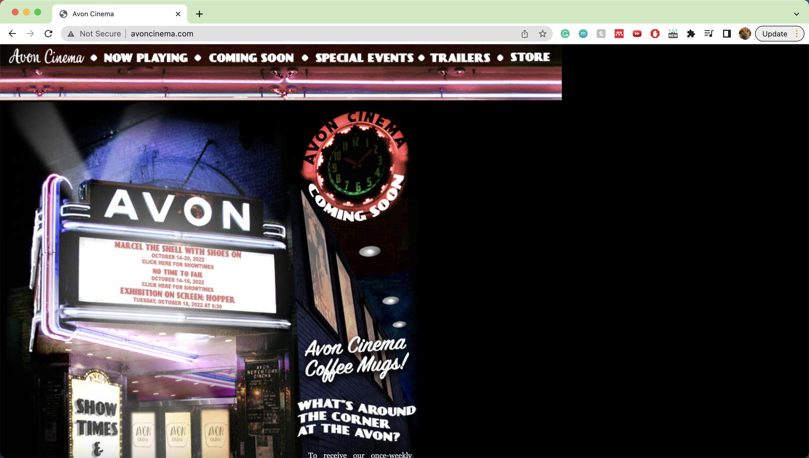
PART 1 - Identifying Usability Problems
Picking a Web Page
I chose to redesign Avon Cinema's Original Webiste because it a very simple website that also had a few issues with usability.
I thought that I was going to be able to make substantial improvements to this website. Avon Cinema is a small business located on Thayer Street that I'm sure many Brown students have passed by when walking on Thayer!
Finding Problems
- Usability (including efficiency)
- For frequent users of this website, it would make the page more efficient if there were certain shortcuts that are frequently
visited by these groups of users. For example, to buy an admission ticket, one would need to scroll down to the admissions
section on the homepage and click on a link that links to a PayPal site. It would be more efficient to make that into a shortcut
at the beginning of the homepage or make it an option at the top of the navigation bar. Scrolling down to a specific part of a page
can be difficult to not only remember but also easy to miss.
- A minor usability issue is the fact that the homepage has a lot of empty space on the right side and the navigation menu bar at the
top is not evenly spaced horizontally so it looks quite awkward on desktop view.
- Learnability - For a first-time user, this website is quite hard to navigate through, thus, making it difficult for the user to
efficiently learn how the website works. For first-time users, it would be multiple repetitions of experimenting with what each feature
does or does not do.
- For example, the navigation menu bar at the top of the homepage does not have any indication that it is clickable or that they
are buttons that will navigate you to a different page. Typically a contrast in color or geometric indication that sets one tab
apart from the others would be placed to show which tab the user is currently on and that the other tabs are also available to
click through and view. However, because of the way it is listed in the same style, it’s difficult to discern that.
- In addition to the top navigation bar, the AVON front image showing the movie titles is also apparently a button that will take
you to another screen that shows the trailers. Users would not be able to figure this out unless they find it by chance either
by hovering the mouse all over the screen or clicking the image perchance. There are many other issues that pertain to the
learnability of the website which will be addressed and improved in later parts of this assignment.
- Another learnability issue is that there are some buttons that will navigate to a separate page. Those buttons are designed so
that it has a white shadowed border around the button to indicate that it is clickable; however, there are other icons with a
similar white border but is not a button nor is it clickable. This can be confusing to first-time users.
- Overall, there are just way too many interactive elements trying to be conveyed on a single image.
-
Memorability - I feel that memorability can also pose some difficulties to users even after they’ve experienced interacting with the
website interface and have gotten used to it. Because the layout of the website is not well structured and organized, it may be difficult
for returning users to remember the functionalities of the website.
- For example, as mentioned before with the front image of AVON on the homepage of the website, there’s nothing that indicates
that it is clickable. To add to that, only part of the image is clickable, and not the entire image itself, so it also incidentally
makes it difficult to recall that ability.
- Another problem pertaining to the memorability of the website is that there is some information on the homepage that is included
in the top bar and some information that is not included in the top bar. For example, when one scrolls down on the homepage, there
is another section that talks about the movies that the theater is currently playing. When clicked, it navigates to the “Now Playing”
page, the same page that the “Now Playing” at the top selection bar. However, information about the directions to the theater or
renting out the theater is only on the homepage and not indicated at the top bar. This is a fine detail that is hard to remember
even for a user who has visited the page before.
Accessibility
Some problems that WebAIM WAVE detected are that:
- There are many missing alternative texts to images, linked images, and spacer images
- I agree with these problems detected
- There are contrast errors
- I don’t agree with these problems. There is a pretty clear contrast in color for the social medias logos and the background of the page.
I am able to easily identify the logos and icons from the rest of the page.
-
No heading structure
- I agree with this problem. At the tome of the homepage of the website, there isn’t a clear heading. There’s only a navigation
menu bar and a small AVON icon at the top left. In other words, there isn't a clear indication as to what the website is. If a user
were to go into this website without knowing its a cinema website, it would be hard to identify without having the heading (AVON Cinema)
super clear.
PART 2
Visual Redesign
Low-Fidelity Wireframing
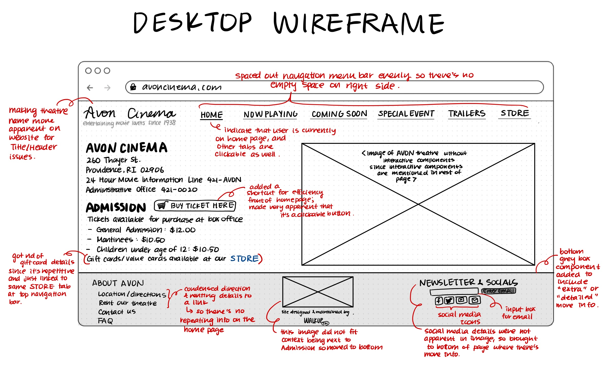
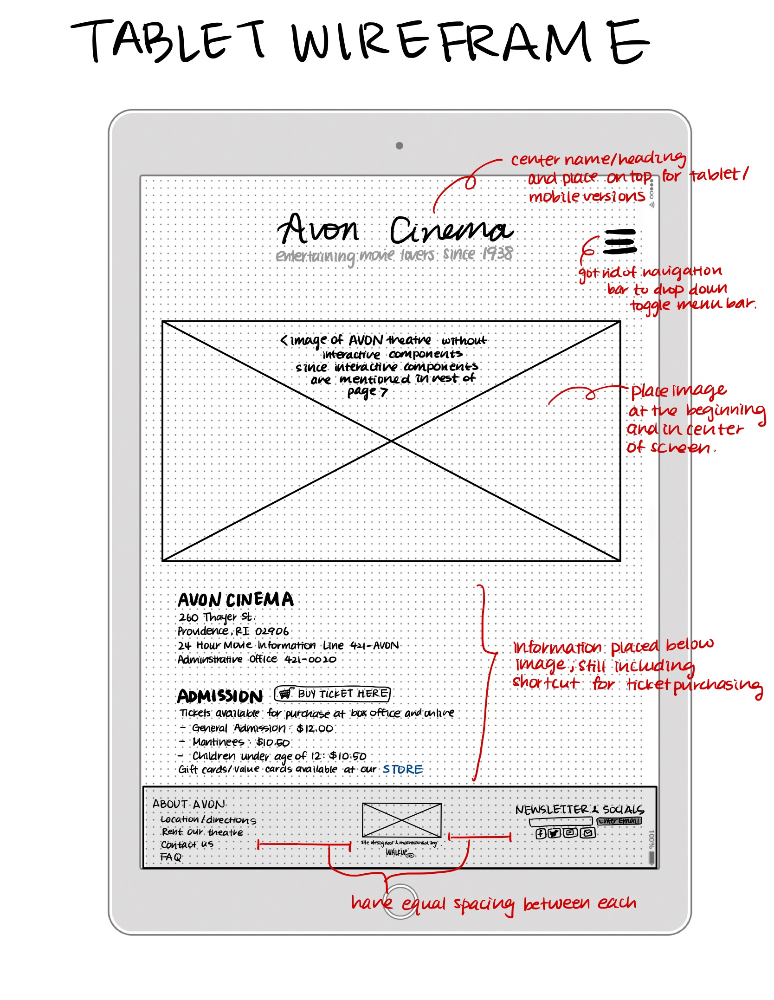
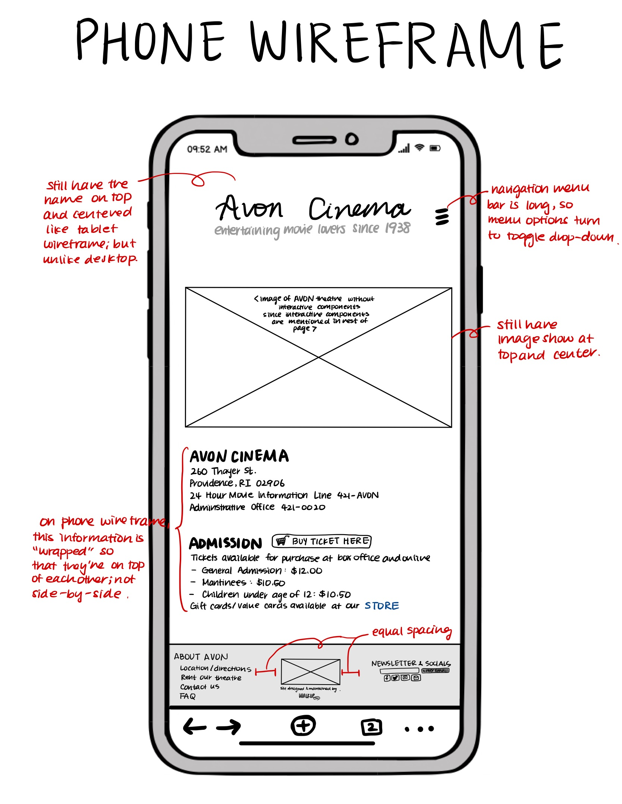
Visual Design Style Guide
High-Fidelity Prototyping
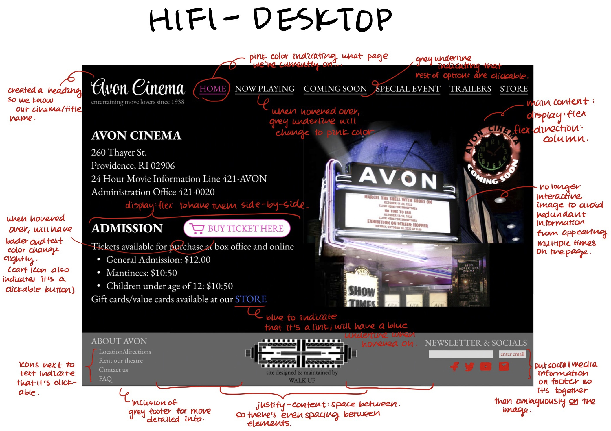
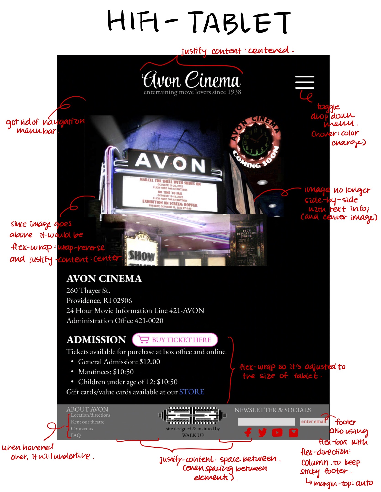
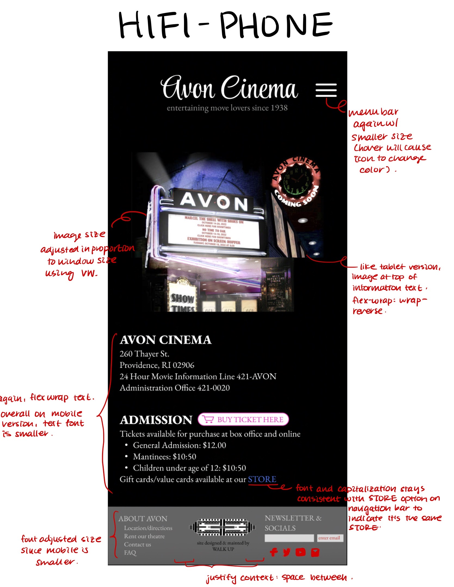
PART 3
Responsive Redesign
My Link: My Responsive Redesign Website
Screenshots of my Responsive Redesigned Website
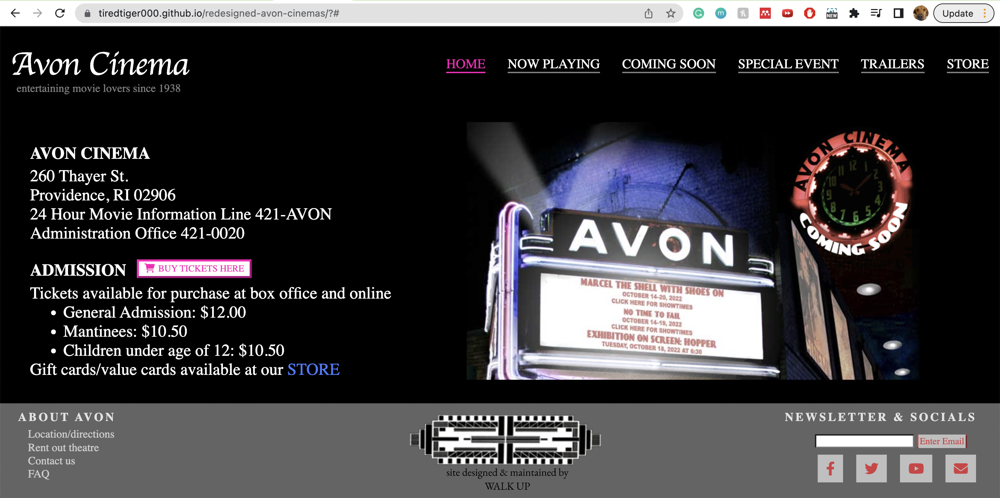
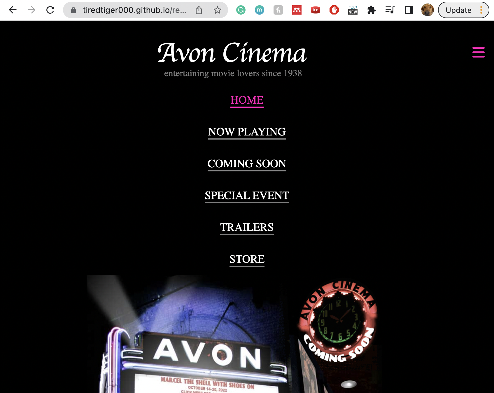
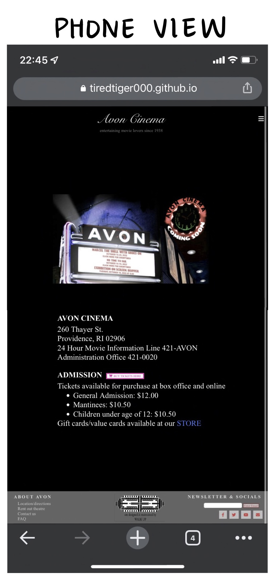
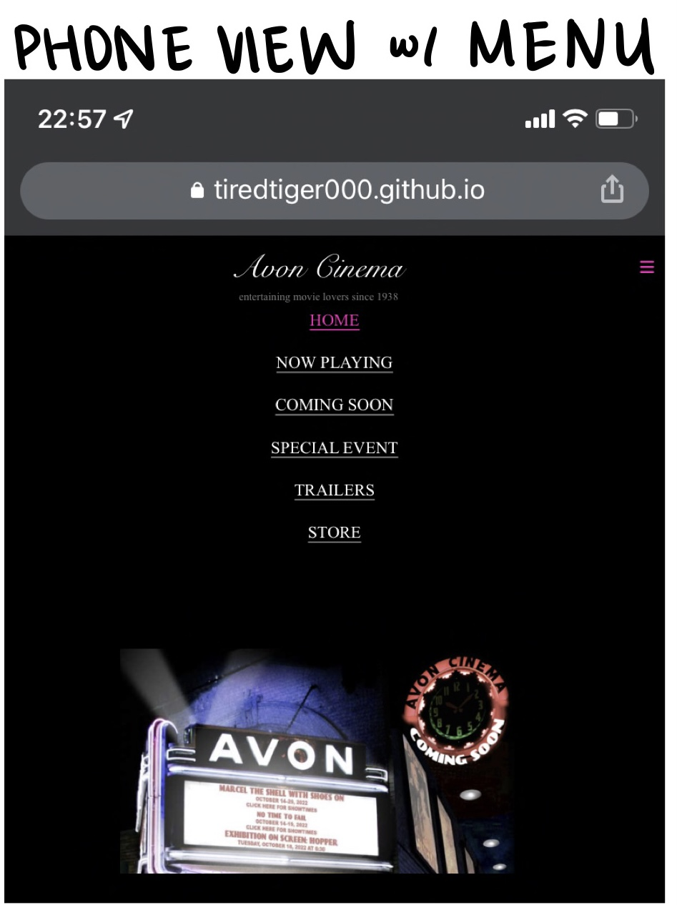
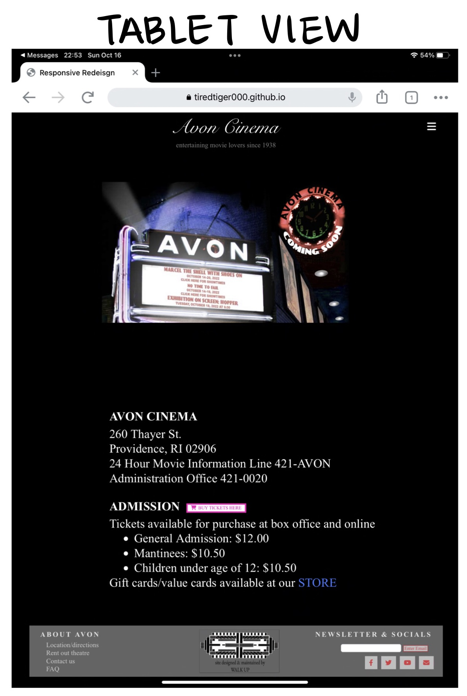
Things to Try & Interactive Elements!
- Try hovering over...
- BUY TICKET HERE button: there should be a color change! When you click on the button, the shadows should change slightly
- each menu option on the navigation bar: the grey underline should change to pink
- the footer links under ABOUT AVON: a grey underline should appear under each option
- each social media icon in the footer: there should be a slight color change
- STORE link under ADMISSION: a blue underline to appear!
-
Make the screen size smaller...
- notice that the Avon Cinema logo is centered since the navigation bar is gone now
- the navigation menu bar should disappear and turn into a menu icon (three bars)
- if you hover over the menu icon it should change color to pink
- clicking on the menu button opens up the menu options and the hover over the options still work!
- notice that the image is centered and on top and the AVON CINEMA and ADMISSION informatio moved to the bottom
- notice that the footer stays at the bottom of the page (sticky footer using flex margin-top:auto)
- the footer is also responsive to the size changes